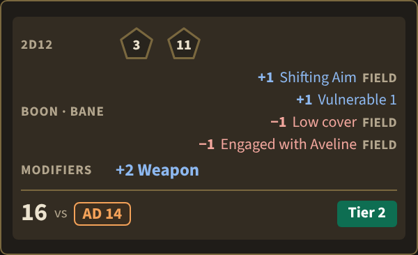
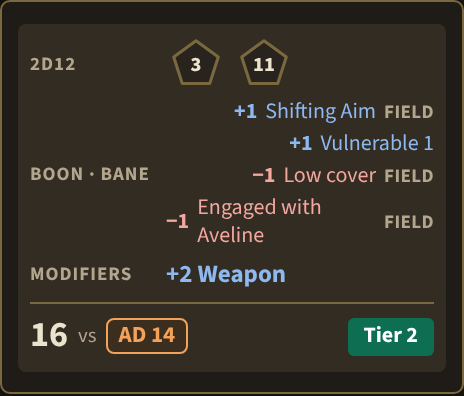
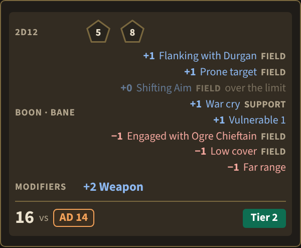

The roll's breakdown: three designs
A mockup: nothing here is in the system. The part of an Action's chat card that explains the roll, drawn three ways for the same ten rolls, in a card 300 px wide. Every number is counted by the system's own rules (calc.mjs), not typed.
Today
Drawn by the system's own function with the system's own CSS (a picture: the page does not load them). The left column is three labels in small capitals; the entries hang from the right edge, so in a narrow chat a long name wraps and its number and its kind are torn from it; the kind is a small tag at the far right; nothing says how the dice became the total.



A. The sentence
One sentence, read left to right, the way the book writes a sum ("11 + 8 + 5 = 24"): the dice, the Modifier, the Boons, the Banes, the total, the Defense, the Tier. It is short enough to stay on the card all the time. A click on +2 Boons −2 Banes opens their names under it, each with its kind in words. Click one to try.
3+11+2 Weapon= 16against AD 14Tier 2
Boons Shifting Aim (Field), Vulnerable 1.
Banes Low cover (Field), Engaged with Aveline (Field).
2 Boons and 2 Banes cancel: nothing is added.
9+10+3 Weapon= 22against AD 15Tier 3
12611 + 6+4+3 Weapon= 24against AD 15Tier 3
9+1043d12, the 4 is dropped+2 Weapon= 21against AD 14Tier 3
Boons Hidden to the target (Favored: counts as 5 Boons), Flanking with Durgan (Field).
Banes Low cover (Field).
6 Boons, 1 Bane: 5 Boons left, so the roll is Favored and nothing is added.
8+3113d12, the 11 is dropped+2 Weapon= 13against AD 14Tier 1
Boons Shifting Aim (Field).
Banes Ranged while Engaged (Doomed: counts as 5 Banes), Far range.
1 Boon, 6 Banes: 5 Banes left, so the roll is Doomed and nothing is added.
6+6+2 Weapon= 15against AD 14Tier 2, Doubles: Tier 3
Boons Flanking with Durgan (Field).
10+10+3 Weapon= 23against AD 15Tier 3, Doubles: Critical
5+8+2 Weapon= 16against AD 14Tier 2
Boons Flanking with Durgan (Field), Prone target (Field), Shifting Aim (Field: 2 at most), War cry (Support), Vulnerable 1.
Banes Engaged with Ogre Chieftain (Field), Low cover (Field), Far range.
4 Boons, 3 Banes: 1 Boon left.
Goblin Archer rolls
7+5+1 Instinct= 15against DC 14Their Tier 2
Boons Durgan's Banes, turned around ×2, Low cover (Field).
Banes Vulnerable 1.
3 Boons, 1 Bane: 2 Boons left.
6+9+2 Weapon= 17for every target
Goblin Sneak17= 18against AD 11Tier 3
Boons Prone target (Field).
Orc Warrior17= 17against AD 14Tier 2
Ogre Chieftain17= 15against AD 16Tier 1
Banes Low cover (Field), Engaged with Durgan (Field).
3+11+2 Weapon= 16against AD 14Tier 2
Boons Shifting Aim (Field), Vulnerable 1.
Banes Low cover (Field), Engaged with Aveline (Field).
2 Boons and 2 Banes cancel: nothing is added.
5+8+2 Weapon= 16against AD 14Tier 2
Boons Flanking with Durgan (Field), Prone target (Field), Shifting Aim (Field: 2 at most), War cry (Support), Vulnerable 1.
Banes Engaged with Ogre Chieftain (Field), Low cover (Field), Far range.
4 Boons, 3 Banes: 1 Boon left.
A narrower chat (232 px) and a popped-out one (420 px)
5+8+2 Weapon= 16against AD 14Tier 2
Boons Flanking with Durgan (Field), Prone target (Field), Shifting Aim (Field: 2 at most), War cry (Support), Vulnerable 1.
Banes Engaged with Ogre Chieftain (Field), Low cover (Field), Far range.
4 Boons, 3 Banes: 1 Boon left.
3+11+2 Weapon= 16against AD 14Tier 2
Boons Shifting Aim (Field), Vulnerable 1.
Banes Low cover (Field), Engaged with Aveline (Field).
2 Boons and 2 Banes cancel: nothing is added.
5+8+2 Weapon= 16against AD 14Tier 2
Boons Flanking with Durgan (Field), Prone target (Field), Shifting Aim (Field: 2 at most), War cry (Support), Vulnerable 1.
Banes Engaged with Ogre Chieftain (Field), Low cover (Field), Far range.
4 Boons, 3 Banes: 1 Boon left.
B. The ledger
Boons in the left column, Banes in the right, a row for each kind, so the two rules that decide the number can be seen as a shape: a kind counts 2 a side at most (the third is struck out), and the columns cancel across (the line under them says what is left). The sentence of the sum closes it.
2 Boons and 2 Banes cancel: nothing is added.
3+11+2 Weapon= 16against AD 14Tier 2
9+10+3 Weapon= 22against AD 15Tier 3
12611 + 6+4+3 Weapon= 24against AD 15Tier 3
6 Boons, 1 Bane: 5 Boons left, so the roll is Favored and nothing is added.
9+1043d12, the 4 is dropped+2 Weapon= 21against AD 14Tier 3
1 Boon, 6 Banes: 5 Banes left, so the roll is Doomed and nothing is added.
8+3113d12, the 11 is dropped+2 Weapon= 13against AD 14Tier 1
1 Boon: +1.
6+6+2 Weapon+1 Boon= 15against AD 14Tier 2, Doubles: Tier 3
10+10+3 Weapon= 23against AD 15Tier 3, Doubles: Critical
4 Boons, 3 Banes: 1 Boon left: +1.
5+8+2 Weapon+1 Boon= 16against AD 14Tier 2
Goblin Archer rolls
3 Boons, 1 Bane: 2 Boons left: +2.
7+5+1 Instinct+2 Boons= 15against DC 14Their Tier 2
6+9+2 Weapon= 17for every target
Goblin Sneak
1 Boon: +1.
17+1 Boon= 18against AD 11Tier 3
Orc Warrior
17= 17against AD 14Tier 2
Ogre Chieftain
2 Banes: −2.
17−2 Banes= 15against AD 16Tier 1
A narrower chat (232 px) and a popped-out one (420 px)
4 Boons, 3 Banes: 1 Boon left: +1.
5+8+2 Weapon+1 Boon= 16against AD 14Tier 2
2 Boons and 2 Banes cancel: nothing is added.
3+11+2 Weapon= 16against AD 14Tier 2
4 Boons, 3 Banes: 1 Boon left: +1.
5+8+2 Weapon+1 Boon= 16against AD 14Tier 2
C. The written sum
A sum written the way it is done on paper: every line starts with its number, in one column, and the line under the column is the total. The Boons and the Banes are one line of that sum (what they add after cancelling), with their own short column under it. A name can be as long as it likes: it wraps under itself, and its number stays at the start of its line. A click on Boons and Banes folds their list.
Goblin Archer rolls
A narrower chat (232 px) and a popped-out one (420 px)
Heights
The breakdown alone, in a 300 px card, in pixels.
| 1. The picture's roll | 5. Many entries | |
|---|---|---|
| Today | 160 | 223 |
| A, closed (the sentence alone) | 42 | 42 |
| A, open | 102 | 154 |
| B | 178 | 230 |
| C, folded | 86 | 86 |
| C, open | 155 | 221 |
Recommended
A on the card, C behind its click. The sentence is the only form short enough to be on every card without a click, and it answers the question asked most ("how did 3 and 11 become 16?") in one line. When the names are wanted, the written sum is the form in which a long name cannot hurt: the number is the first thing on its line. If only one is built, build C.
B is the most exact picture of the rule (the limit of a kind and the cancelling are shapes, not words) and the tallest; it also splits a 300 px card into two columns of about 135 px, where most names wrap. It suits a wide window better than the chat.
Questions for Lucas
- A, B or C, or A with C behind its click?
- Always on the card, or behind a click? Today the whole breakdown opens on a click on the Tier ladder. A's sentence could be on the card all the time (42 px), with only the names behind a click.
- The names: open or closed at first?
- An entry that does not count (a third Field): shown struck out with "2 at most", as drawn, or left out?
- Cancelling: the rule cancels counts, not pairs, so no design says "this Boon cancelled that Bane". The designs say "4 Boons, 3 Banes: 1 Boon left". Enough?
- The Defense is written "against AD 14" in ink (today a colored, framed badge). Keep the badge's color?
- Several targets: drawn as one breakdown (the shared dice once, then each target). Today each target's row opens its own, with the dice repeated. Which?